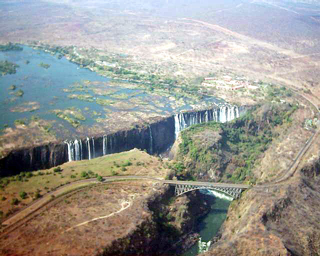
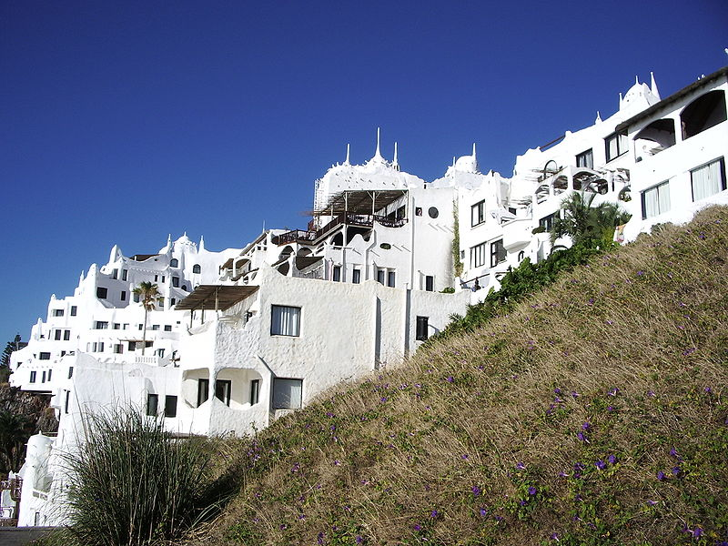
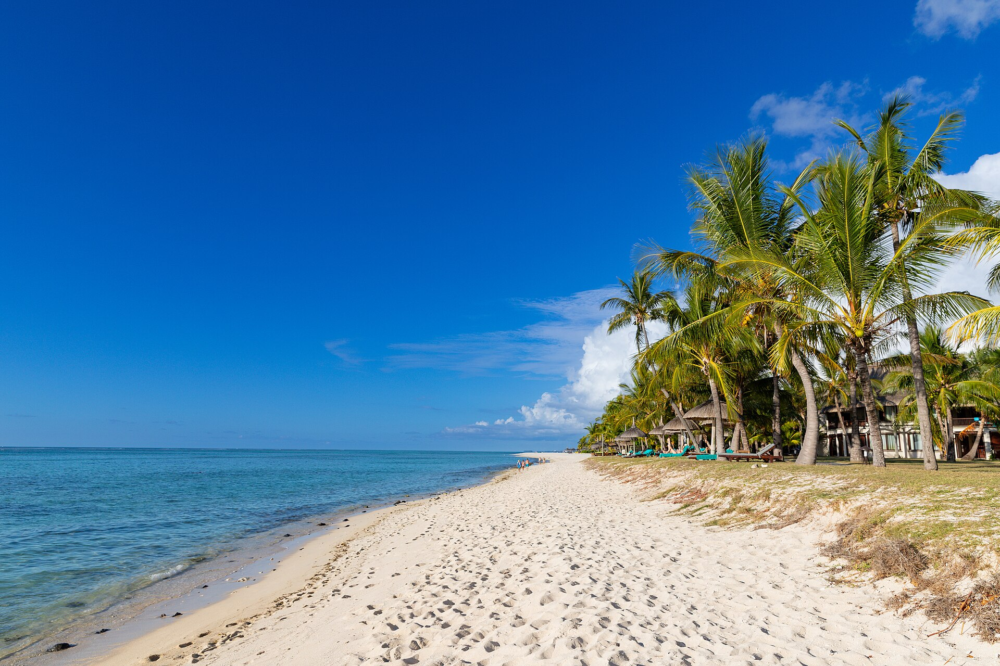

Explore the wonders of the world through its captivating tourist attractions! From the majestic Eiffel Tower in Paris to the serene beaches of the Maldives, each destination offers a unique blend of culture, history, and natural beauty. Whether you're wandering through ancient ruins, sampling local cuisine, or immersing yourself in vibrant city life, there's something for every traveler to enjoy. Discover the stories behind each landmark and create unforgettable memories on your journey!
Victoria Falls, Zimbabwe
Tourism in Uruguay (Casapueblo)
Louvre

Casino du Liban
Mauritius
The world is brimming with extraordinary tourist attractions that cater to every interest and passion. Whether you're an adventure seeker, a history buff, or simply looking to relax, these remarkable sites provide experiences that inspire and connect us. As you plan your next getaway, remember that each attraction has its own story to tell, waiting for you to discover. Embrace the journey, explore new horizons, and let your adventures unfold!